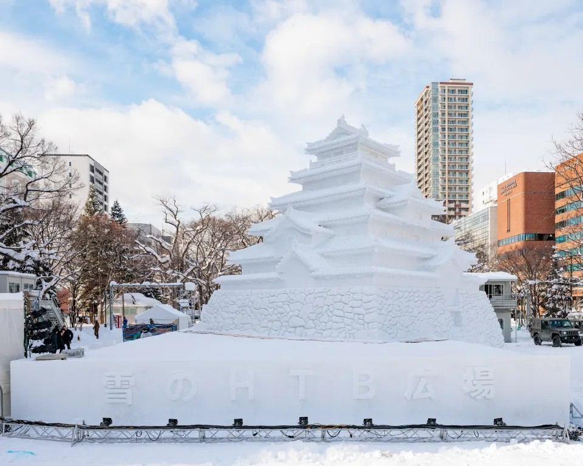

Festivals · Culture
Sapporo Snow Festival 2027 (78th)
- Dates
- –
- Venue
- Odori Park and Susukino
- Location
- Sapporo, Japan
- Format
- In-person
- Category
- Culture
- Industry
- Winter festival / snow sculpture
- Organiser
- Sapporo Snow Festival Executive Committee
- Expected attendance
- 2,539,000
- Official website
- https://www.snowfes.com/en/
About
Dates are local to the host city (Japan Standard Time, UTC+9).
Topics: snow sculptures, ice sculptures, winter festival.
Official 2026 (76th) results release: Odori site 1,926,000 + Tsudome site 613,000 = 2,539,000 visitors (Susukino counted separately).